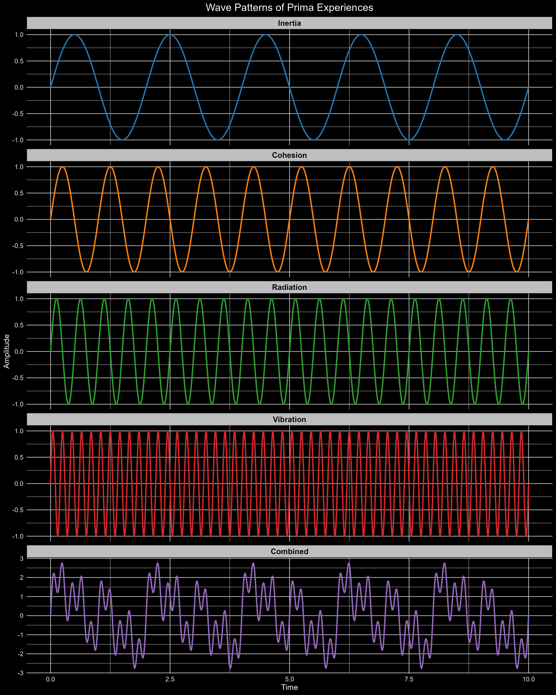

Code
library(ggplot2)
library(gridExtra)
library(showtext)
library(ggtext)
library(gganimate)
library(gifski) # Ensure gifski is installed
library(transformr)The text of your abstract. 200 or fewer words.
3 to 6 keywords, that do not appear in the title
library(ggplot2)
library(gridExtra)
library(showtext)
library(ggtext)
library(gganimate)
library(gifski) # Ensure gifski is installed
library(transformr)# #| label: define_data
# #| code-fold: true
# #| warning: false
#
# t <- seq(0, 10, by = 0.01) # Time from 0 to 10 with small steps
#
# # Define different wave patterns
# inertia_wave <- sin(2 * pi * 0.5 * t) # Low frequency wave (slow change)
# cohesion_wave <- sin(2 * pi * 1.0 * t) # Medium frequency wave
# radiation_wave <- sin(2 * pi * 2.0 * t) # Higher frequency wave
# vibration_wave <- sin(2 * pi * 5.0 * t) # Very high frequency wave
#
# # Combine all waves
# combined_wave <- inertia_wave + cohesion_wave + radiation_wave + vibration_wave
#
# colored_waves <- c("blue", "green", "yellow", "purple", "red")
#
# # Create data frame for plotting
# wave_data <- data.frame(
# Time = rep(t, 5),
# Amplitude = c(inertia_wave, cohesion_wave, radiation_wave, vibration_wave, combined_wave),
# Type = factor(rep(c("Inertia", "Cohesion", "Radiation", "Vibration", "Combined"), each = length(t)),
# levels = c("Inertia", "Cohesion", "Radiation", "Vibration", "Combined"))
# )
#
# # Define a color palette
# color_palette <- c("Inertia" = "#1f77b4", # Blue
# "Cohesion" = "#ff7f0e", # Orange
# "Radiation" = "#2ca02c", # Green
# "Vibration" = "#d62728", # Red
# "Combined" = "#9467bd") # Purple# #| label: fig_combined_wave
# #| code-fold: true
# #| warning: false
#
# p <- ggplot(wave_data, aes(x = Time, y = Amplitude, color = Type)) +
# geom_line(size = 1) +
# facet_wrap(~ Type, scales = "free_y", ncol = 1) +
# scale_color_manual(values = color_palette) +
# theme_minimal() +
# labs(title = "Model of Wave Patterns of Prima Experientia",
# x = "Time",
# y = "Amplitude") +
# theme(
# plot.title = element_text(color = "white", size = 16, hjust = 0.5),
# axis.title = element_text(color = "white", size = 12),
# axis.text = element_text(color = "white", size = 10),
# strip.text = element_text(color = "black", size = 12, face = "bold"),
# strip.background = element_rect(fill = "gray"),
# panel.background = element_rect(fill = "black"),
# plot.background = element_rect(fill = "black"),
# panel.grid.major = element_line(color = "gray"),
# panel.grid.minor = element_line(color = "gray"),
# legend.position = "none" # Remove legend as it's redundant with facet labels
# )
# # Save the plot with specified width and height
# ggsave("prima_experientia_waves_patterns.png", plot = p, width = 12, height = 15, dpi = 300)
#
# # Print a message to confirm the file has been saved
# #print("Plot has been saved as 'prima_experiences_waves_colored_white_fonts.png' with width = 12 and height = 15")

# #| label: animation_prima-experientia
# #| code-fold: true
# #| warning: false
#
# wave_pattern_anim <- ggplot(wave_data, aes(x = Time, y = Amplitude, color = Type)) +
# geom_line(size = 1) +
# facet_wrap(~ Type, scales = "free_y", ncol = 1) +
# scale_color_manual(values = color_palette) +
# theme_minimal() +
# labs(title = "Model of Wave Patterns of Prima Experientia",
# x = "Time",
# y = "Amplitude") +
# theme(
# plot.title = element_text(color = "white", size = 16, hjust = 0.5),
# axis.title = element_text(color = "white", size = 12),
# axis.text = element_text(color = "white", size = 10),
# strip.text = element_text(color = "black", size = 12, face = "bold"),
# strip.background = element_rect(fill = "gray"),
# panel.background = element_rect(fill = "black"),
# plot.background = element_rect(fill = "black"),
# panel.grid.major = element_line(color = "gray"),
# panel.grid.minor = element_line(color = "gray"),
# legend.position = "none" # Remove legend as it's redundant with facet labels
# ) +
# transition_reveal(Time)
#
# # Create and save the animation as GIF
# anim <- animate(wave_pattern_anim,
# fps = 30,
# duration = 5,
# width = 12,
# height = 15,
# units = "in",
# res = 300,
# renderer = gifski_renderer())
#
# anim_save("prima_experiences_waves_animated.gif", animation = anim)
#
# # Print a message to confirm the file has been saved
# print("Animation has been saved as 'prima_experiences_waves_animated.gif' with width = 12 inches and height = 15 inches")